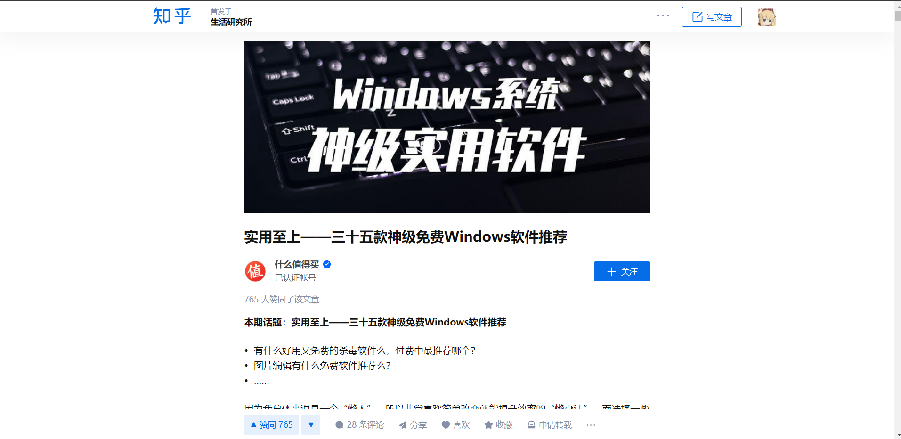

是的, 这是我的第一份Web作业
下滑以阅读关于此网站的更多信息
此网站的关键说明
样式参考
本网站主要参考了知乎( zhihu.com )专栏的设计，并且将主题色设为 #333333 和 crimson 色，使得网页更加护眼且个性。

知乎专栏
本站中文显示大量使用了来自 Microsoft 的等线字体, 所以理论上可以在Windows上取得最佳效果。 相应的，我们也考虑了其它系统并准备了备用字体。 遗憾的是，我们对移动端的适配并不理想，建议使用PC/Mac进行访问。

本网站的理想显示状态，以1920*1080分辨率在 Windows 11 + Edge 上运行
作业完成说明
我们通过一种自然的方式来完成作业，通常我们完成一个较为完整的网站，提供其它页面与文本，在其中完成作业的任务。
注意！为了保证页面美观以及内容的自然，作业提到的具体细节可能会被忽略或被其它内容替代！
特别地，以下任务已在本页面中完成：
-
列表
- 无序列表
- 有序列表
- 列表嵌套
-
超链接
- 跳转至外部网站 --- 导航栏：Github，正文文本
- 跳转到本地网页 --- 导航栏：其它按钮
- 跳转到 锚点 (返回到页面开始处)
- 图片
表单相关内容在“注册”页面中体现，而表格内容则在“技术类博客”中体现。